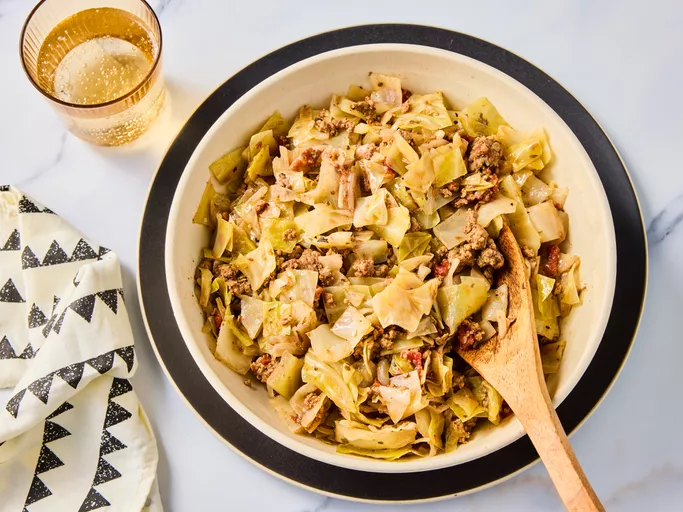

Home
Ground Beef and Cabbage

Description:
This ground beef and cabbage recipe was my mother's. She was a country cook, plain and simple. But as I have traveled and worked and experienced foods from around the world, I look back and realize that many of the dishes she prepared, while
simple, were perfect for that moment. Sometimes we have to put emotion and love in a dish to make it extra-special.
Ingredients:
- 1 large head cabbage, finely chopped
- 1 (14.5 ounce) can diced tomatoes with juice
- 1 onion, halved and thinly sliced
- 1 tablespoon Italian seasoning
- salt and ground black pepper to taste
- 1 pound lean ground beef
Steps:
- Gather all ingredients.
- Place cabbage, tomatoes with juice, onion, Italian seasoning, salt, and pepper into a Dutch oven or large pot over low heat; cook and stir until it begins to simmer.
- Add lean ground beef on top; cover and cook, stirring occasionally, until cabbage is tender and ground beef is cooked through, about 45 minutes.
- Serve and enjoy!